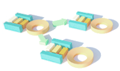

The largest application area for OMNEST is the simulation of various communication networks, such as wired and wireless networks, mobile ad-hoc networks, sensor networks, vehicular networks and others.
The largest application area for OMNEST is the simulation of various communication networks, such as wired and wireless networks, mobile ad-hoc networks, sensor networks, vehicular networks and others.
Several customers use OMNEST for the architectural exploration of high-performance computing systems: fast interconnects, network-on-chip architectures and more.

You can easily build queueing and resource allocation based performance models, and when more details need to be accommodated into the model, OMNEST helps you by allowing you to refine, specialize, enhance or replace model blocks.
Several customers have chosen to embed the OMNEST simulation kernel into their products. By doing so, one can benefit from its functionality and high performance, while still being able to develop and test models in the OMNEST Simulation IDE.